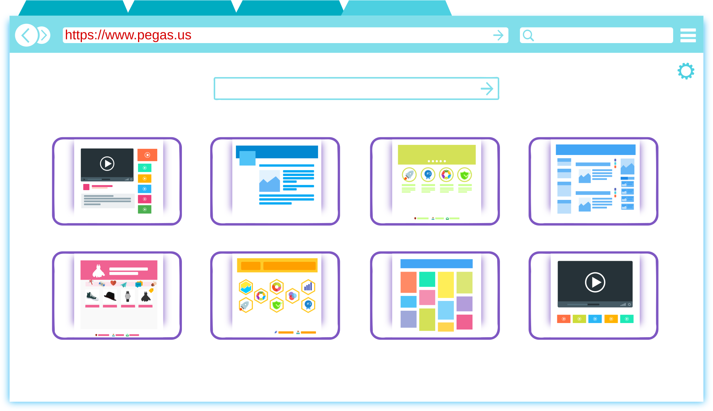

Die Java Enterprise Edition ist keine Erweiterung von Java sondern ein offener Standard für javabasierte Anwendungsserver.
Diese werden von unterschiedlichen Herstellern angeboten:
Jeder Anwendungsserver besitzt dabei einen Webcontainer zur Bereitstellung von Webinhalten sowie eine
EJB-Container zur Ausführung der fachlichen Anwendungsklassen. Darüber hinaus bietet er viele eingebaute
Zusatzfunktionen:
Verschiedene Arten der Benutzerverwaltung (Datenbankbasiert, LDAP, …)
Die Möglichkeit, Nachrichten an einen Message Broker zu senden
Eine API zum Versand von E-Mails
Einen Timer zur Einplanung von Hintergrundaktivitäten
Und noch vieles mehr üå†
Aufbau eines Applikationsservers
Webprogrammierung
Servlets
Grundlegende Klassenbibliothek zur Reaktion auf HTTP-Anfragen. Es handelt sich dabei um
die Basistechnologie, die allen höheren Webframeworks für Java EE zugrunde liegt.
Java Server Pages
Serverseitige Erweiterung von HTML. Erlaubt es, Teile der Seite dynamisch auf dem Server
zu erzeugen, bevor sie an den Browser geschickt wird.
Java Server Faces
Von Oracle entwickeltes, mit Java EE ausgeliefertes Webframework. Nutzt eine an HTML
angelehnte Beschreibungssprache zur Definition des Layouts.
Anwendungslogik
Enterprise Java Beans
Spezielle Laufzeitumgebung für die fachlichen Klassen einer Anwendung. Sie ermöglichen es,
Services zu definieren, die von lokalen und entfernten Clients genutzt werden können.
Java Database Connection
Allgemeine Klassenbibliothek für den Zugriff auf SQL-Datenbanken. Sie bildet die Grundlage
für JPA und JTA und wird heutzutage selten direkt genutzt.
Java Persistence API
O/R-Mapper zur Vereinfachung des Datenbankzugriffes. Die Feöder einer Tabelle werden
automatisch auf die Attribute einer Javabean gemappt.
Java Transaction API
Framework für von der Datenbank unabhängige, verteilte Transaktionen.
Schnittstellen
Java API for XML-Webservices
Klassenbibliothek zum Erstellen und Aufrufen von SOAP-Webservices.
Java API for REST-Webservices
Klassenbibliothek zum Erstellen und Aufrufen von REST-Webservices.
Java Message Services
Klassenbibliothek für den Zugriff auf einen Message Broker.
Java Mail API
Hilfsklassen zum Versenden von E-Mails.
Sonstiges
Java Authentication & Authorization Service
Rollenbasierte Benutzer- und Berechtigungsverwaltung. Erlaubt es, die Benutzer entweder in einer
Datenbanktabelle abzulegen oder auf externe Provider, wie zum Beispiel LDAP-Verzeichnisse,
zuzugreifen.
Im Unternehmensumfeld geht es häufig darum, mit unterschiedlichen Endgeräten eine gemeinsame Datenbasis zur
Dokumentation aller Geschäftsvorgänge zu pflegen. Anwendungen wie diese besitzen daher ein ausgefeiltes Datenmodell
und darauf aufbauend sehr viele Services, welche die Geschäftsprozesse des Unternehmens abbilden. Das Datenmodell
wird dabei durch die Persistence Entity-Klassen modelliert, während die Services in Enterprise Java Beans
enthalten sind. Fremde Clientprogramme können die EJBs über Rechnergrenzen hinweg direkt aufrufen. Innerhalb des
Applikationsservers stehen sie aber auch zur Nutzung in Webanwendungen zur Verfügung.
Dieses Beispiel zeigt ein großes Webportal mit mehreren, von der restlichen Anwendungslogik entkoppelten Webfrontends.
Zur besseren Skalierung wurden sie in einem eigenen Webcontainer genannten Anwendungsserver deployed.
Zusätzlich werden die Dienste fremder Anbieter per Webserviceaufruf in das Portal integriert.
¹ Vollwertige Java EE-Applikationsserver bestehen im Grunde genommen aus nichts anderem als einem
Webcontainer und einem EJB-Container, wobei der Webcontainer die Servlet- und webbezogenen APIs zur
Verfügung stellt und der EJB-Container den Rest. Wenn man aber weiß, dass man die mit dem EJB-Container
vorausgelieferten Klassen nicht nutzen will, weil man sie nicht braucht oder weil man sich nicht darauf
verlassen will, dass der Server die richtigen Versionen bereitstellt, kann man auch nur einen Webcontainer
installieren.
Schauen wir uns an, wie Model, View und Controller beim Aufruf einer Webseite zusammenarbeiten.
Hierfür gibt der Anwender eine URL ein und schickt die Anfrage ab.

Anhand der URL ermittelt der Server ein Servlet, das die Anfrage bearbeitet.
Da das Servlet keine fachliche Logik enthalten darf, ruft es eine oder mehrere Enterprise Java Beans auf,
die die eigentliche Arbeit erledigen.
Die Enterprise Java Beans wiederum nutzen Persistence Entities, um Daten aus der Datenbank zu
lesen oder zu schreiben.
Das Servlet legt die eben erhaltenen Daten im Request Context ab und leitet die Anfrage
an eine Java Server Page weiter.
Die Java Server Page wiederum generiert den HTML-Code, der an den Browser geschickt wird.
Der Browser zeigt die empfangene Seite an und der Anwender freut sich. üòä
Auf der nächsten Folie zeigen wir dir, wie der Quellcode hierfür aussehen muss. ⌨️
So sieht das Netbeans-Projekt aus. Wir bauen ein kleines Gästebuch.
Diese Persistence Entity entspricht einem in der Datenbank gespeicherten Eintrag.
package dhbwka.wwi.vertsys.javee.guestbook;
import java.io.Serializable;
import java.sql.Date;
import java.sql.Time;
import javax.persistence.Entity;
import javax.persistence.GeneratedValue;
import javax.persistence.GenerationType;
import javax.persistence.Id;
/**
* Persistenzklasse für einen Gästebucheintrag.
*/
@Entity
public class GuestbookEntry implements Serializable {
private static final long serialVersionUID = 1L;
@Id
@GeneratedValue(strategy = GenerationType.AUTO)
private Long id;
private String name = "";
private Date visitDate = new Date(System.currentTimeMillis());
private Time visitTime = new Time(System.currentTimeMillis());
public GuestbookEntry() {
}
public GuestbookEntry(String name) {
this.name = name;
}
//<editor-fold defaultstate="collapsed" desc="Setter und Getter">
public Long getId() {
return id;
}
public void setId(Long id) {
this.id = id;
}
public String getName() {
return name;
}
public void setName(String name) {
this.name = name;
}
public Date getVisitDate() {
return visitDate;
}
public void setVisitDate(Date visitDate) {
this.visitDate = visitDate;
}
public Time getVisitTime() {
return visitTime;
}
public void setVisitTime(Time visitTime) {
this.visitTime = visitTime;
}
//</editor-fold>
}
Dies ist eine Enterprise Java Bean. Sie enthält die Methoden zum Lesen und Schreiben der Einträge.
package dhbwka.wwi.vertsys.javee.guestbook;
import java.util.List;
import javax.ejb.Stateless;
import javax.persistence.EntityManager;
import javax.persistence.PersistenceContext;
/**
* Enterprise Java Bean zum Auslesen und Speichern von Gästebucheinträgen.
*/
@Stateless
public class GuestbookBean {
@PersistenceContext
EntityManager em;
/**
* @return Liste mit allen Gästebucheinträgen
*/
public List<GuestbookEntry> findAllEntries() {
return em.createQuery("SELECT e FROM GuestbookEntry e "
+ " ORDER BY e.visitDate DESC, "
+ " e.visitTime DESC")
.getResultList();
}
/**
* Speichert einen neuen Gästebucheintrag.
* @param name Name des Besuchers
* @return Der gespeicherte Eintrag
*/
public GuestbookEntry createNewEntry(String name) {
GuestbookEntry entry = new GuestbookEntry(name);
em.persist(entry);
return em.merge(entry);
}
}
Dies ist das Servlet, dass bei jeder GET- und POST-Anfrage durchlaufen wird.
package dhbwka.wwi.vertsys.javee.guestbook;
import java.io.IOException;
import java.util.List;
import javax.ejb.EJB;
import javax.servlet.ServletException;
import javax.servlet.annotation.WebServlet;
import javax.servlet.http.HttpServlet;
import javax.servlet.http.HttpServletRequest;
import javax.servlet.http.HttpServletResponse;
import javax.servlet.http.HttpSession;
/**
* Servlet für die Gästebuchseite
*/
@WebServlet(urlPatterns = {"/index.html"})
public class GuestbookServlet extends HttpServlet {
@EJB
GuestbookBean guestbookBean;
@Override
public void doGet(HttpServletRequest request, HttpServletResponse response)
throws ServletException, IOException {
// Alle vorhandenen Einträge aus der Datenbank lesen und im Request
// Context ablegen, damit sie in der JSP zur Verfügung stehen
List<GuestbookEntry> entries = this.guestbookBean.findAllEntries();
request.setAttribute("entries", entries);
// Anfrage an die JSP weiterleiten
request.getRequestDispatcher("guestbook.jsp").forward(request, response);
// In der Session liegende Fehlermeldung verwerfen, damit wir beim
// nächsten Aufruf wieder mit einem leeren Eingabefeld anfangen
HttpSession session = request.getSession();
session.removeAttribute("fehler");
session.removeAttribute("name");
}
@Override
public void doPost(HttpServletRequest request, HttpServletResponse response)
throws ServletException, IOException {
// Prüfen, ob der Anwender seinen Namen eingegeben hat
HttpSession session = request.getSession();
String fehler = "";
String name = request.getParameter("name");
if (name == null || name.trim().isEmpty()) {
fehler = "Bitte gib erst deinen Namen ein.";
session.setAttribute("fehler", fehler);
session.setAttribute("name", name);
}
// Neuen Eintrag speichern
if (fehler.isEmpty()) {
this.guestbookBean.createNewEntry(name);
}
// Browser auffordern, die Seite neuzuladen
response.sendRedirect(request.getContextPath());
}
}
Hier die Datei WEB-INF/guestbook.jsp mit dem JSP-Code zur Anzeige der Seite.
Starte Netbeans und wähle im File-Menü New Project… aus.
Als Projekttyp solltest du Web Application in der Kategorie Maven nehmen.
Gib im nächsten Schritt den Namen des Projekts ein und ändere ggf. die Project Location
und das Package.
Die Einträge im letzten Schritt sollten bereits richtig sein. Du kannst das Projekt daher nun anlegen.
Die Datei index.html solltest du löschen. Wir ersetzen sie durch ein Servlet und eine JSP.
Doch zunächst legen wir eine Persistence Entity an. In Netbeans heißt der Eintrag Entity Class….
Nenne die neue Klasse GuestbookEntry und gehe weiter.
Ändere dein Eintrag bei Persistence Unit Name auf default.
Im Feld Data Source musst du jdbc/__default auswählen.
Den Quellcode kannst du aus der vorherigen Folie kopieren.
Weiter geht es mit der Enterprise Java Bean. Hierfür legst du am besten einfach eine leere Klasse an.
Nenne die Klasse GuestbookBean und bestätige das Fenster.
Auch hier kannst du den Quellcode aus der vorherigen Folie kopieren.
Weiter geht es mit dem Servlet. Lege auch hierfür eine Empty Class… anstelle eines Servlet… an.
Denn sonst generiert Netbeans viel zu viel unnötigen Quellcode!
Die Klasse hei√üt (Trommelwirbel bitte ü•Å): GuestbookServlet.
Nun kommt die Java Server Page.
Sie heißt einfach nur guestbook. Die Dateiendung ergänzt Netbeans von alleine.
Das Stylesheet kannst du in eine neue, leere Datei mit dem Namen style.css kopieren.
Nun solltest du die Anwendung über das grüne Play-Symbol
▶️ starten können.
Wenn alles gute geht, sollte der Browser dann folgendes Bild anzeigen.
Das war's auch schon.
Zwar waren das jetzt schon einige Schritte.
Du musstest aber auch gleich fünf Dateien übernehmen.
1️⃣
2️⃣
3️⃣
4️⃣
5️⃣